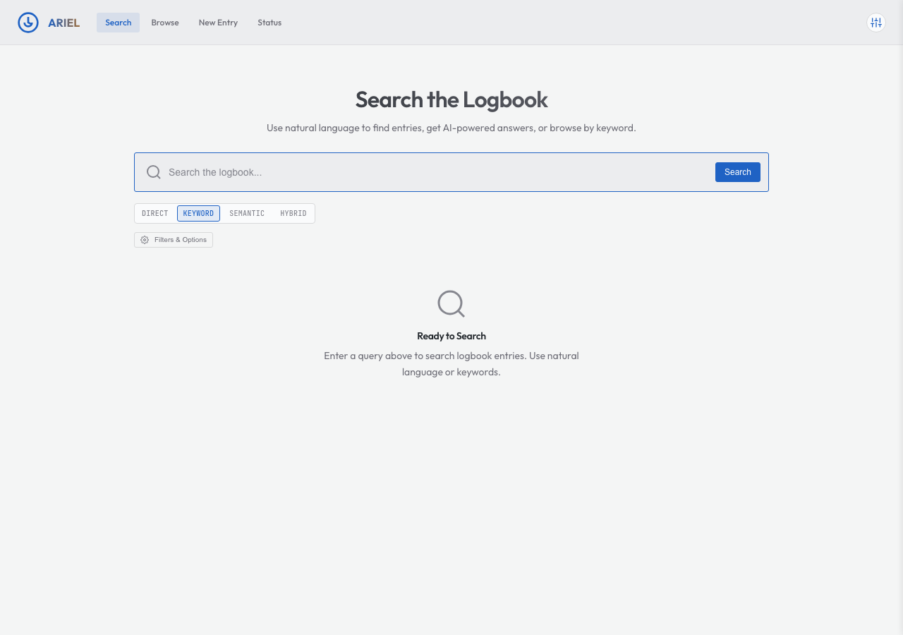
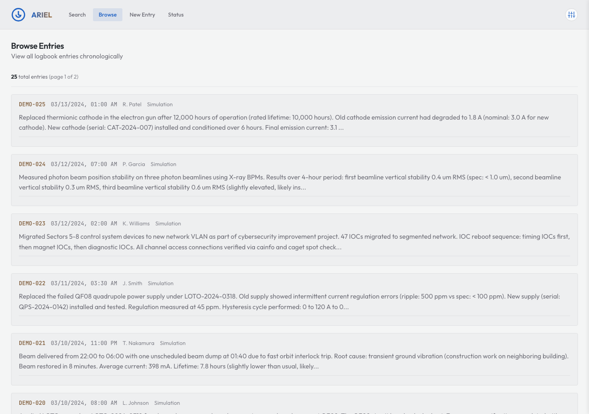
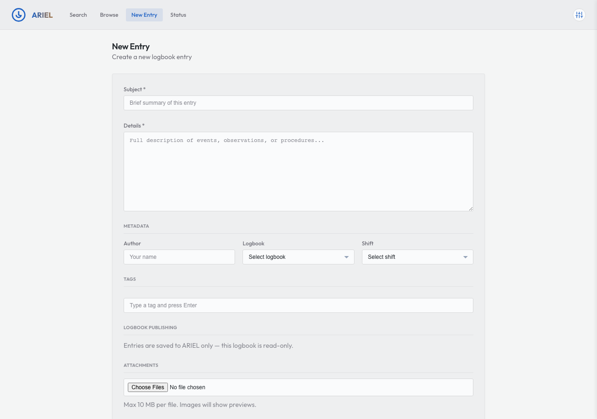
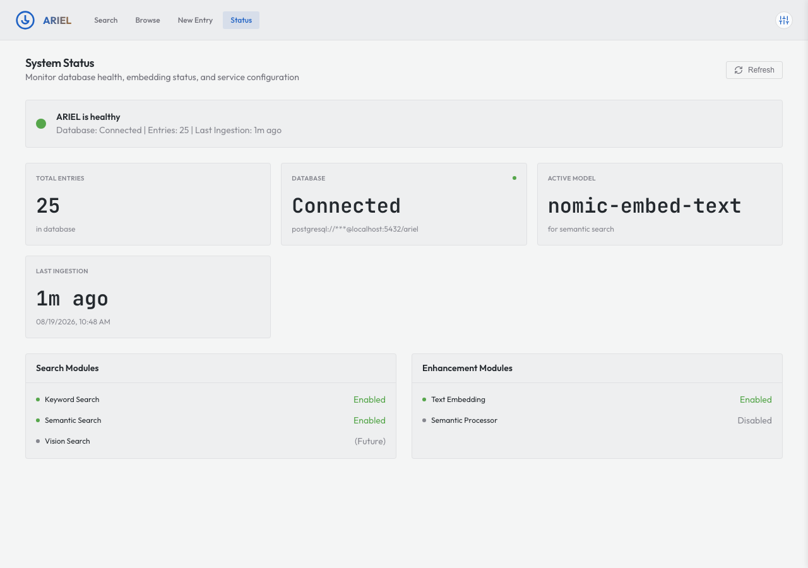

Web Interface#
ARIEL ships with a browser-based search interface that provides the same search capabilities as the CLI in a more approachable form. The interface is a FastAPI application serving a JavaScript single-page application (SPA). It connects to the same ARIELSearchService as the CLI and the ARIEL MCP tools, so any search module you register is automatically available in the UI.
Views#
The interface has four views, accessible via the navigation bar. All views are rendered client-side using hash-based routing (#search, #browse, #create, #status).
The primary view. A search bar with mode tabs (Keyword, Semantic — only enabled modes are shown) and an expandable advanced options panel. Results display as entry cards with relevance scores and highlights. Press Enter to submit a query; searches always include the current advanced options and filters.
{kind=link}

Search view with Keyword mode selected.#
Chronological, paginated listing of logbook entries (newest first) – use Previous/Next to page back through older entries. Each entry shows its timestamp, author, and a text preview. Click an entry to view its full content.
{kind=link}

Browse view showing paginated entries sorted newest-first.#
Form for creating new logbook entries directly from the interface. Fields include subject, details, author, logbook, shift, and tags. When the configured logbook adapter is read-only (the common case for the standalone interface), entries are saved locally with source_system: "ARIEL Web" and a generated entry_id of the form ariel-<12-hex>. When a write-capable facility adapter is configured, the entry is published to that logbook and takes the facility’s source_system and entry_id. Created entries are searchable immediately.
{kind=link}

New entry form for creating logbook entries from the web interface.#
Dashboard showing service health, database connection, entry count, embedding tables, enabled modules, and last ingestion timestamp. The dashboard polls /api/status on load, making it useful for verifying that the service is configured correctly after deployment.
{kind=link}

Status dashboard showing service health and configuration.#
The four ARIEL views above were captured with OSPREY v2026.6.2.post1352+geab911034.d20260819 from the
control-assistant tutorial’s seeded logbook.
Advanced Options#
The Filters & Options panel is built from whatever the enabled search modules declare, so the controls in it depend on the deployment. Two things about how it behaves are worth knowing before you tune anything.
Every knob shows its own explanation. The description a module writes for a parameter is rendered as a line of hint text under the control, rather than hidden behind a hover tooltip — readable on a touch screen, and readable without having to discover that there was something to hover over.
Knobs you have not touched follow the deployment’s configuration. The panel opens on the deployment’s configured value for every control that has one, and on the shipped default for the rest; a search sends only the controls you actually changed. Anything you left alone is not sent at all, so it resolves on the server to whatever the configuration says — which means a change to the deployment’s config reaches the panel without anyone re-picking anything, after the service restarts and the page is reloaded. Reset clears the whole set: values return to the configured defaults, and every knob counts as untouched again.
That is also why the reranking control behaves the way it does. Rerank
Results opens showing search_modules.hybrid.settings.rerank exactly as the
deployment set it, and clicking it overrides the configured value for your
searches from then on, without changing the deployment. Reset returns it to
the deployment’s value. The key itself is described in Search Modes.
Watching a reranked search run#
Reranking costs seconds, and the interface does not ask you to spend them looking at a spinner. A search that will be reranked runs in two phases: the fast ranking is fetched and drawn first, then the reranked ranking replaces it when it arrives. A status line above the results says which of the two you are looking at. Expert view names the mechanism — Search complete — reranking with LLM…, then Results updated after reranking. Simple view says the same thing in one plain line — Showing quick results — improving the order now…, then Order improved — best matches first.
The second response is drawn from a larger candidate pool, so entries can appear or drop out between the phases: the list is redrawn, not merely reordered.
If the reranker cannot answer — most often on the first query after the search sidecar starts, while its model is still loading — the fast results stay on screen under Could not improve the ranking — showing fast results. Nothing is lost, and there is nothing to do about it; the next query is normally reranked.
Display Preferences#
The button at the top right of the header — the one drawn as three sliders — opens a small card holding everything about how the interface looks, plus the way in to its settings:
- Appearance
Light or Dark. It flips the shade without changing which theme you are in.
- View
Expert or Simple. Expert is the full interface. Simple clears away the extras — the four-tab strip becomes a single “Browse all entries” link, the search mode tabs and advanced options disappear, and results lose their relevance scores — leaving a search box and a list of entries.
- Theme
One button per theme family: Main, DESY, High Contrast, and Retro. Picking a family keeps whichever appearance you are already in, so a switch from Main to High Contrast in dark stays dark.
- Settings
Opens the settings drawer, where you can read and edit ARIEL’s configuration block.
Appearance, View, and Theme take effect straight away and leave the card open,
so you can compare two looks without re-opening the menu. Settings closes it,
because it takes you to a different surface. Click anywhere outside the card,
or press Escape, to dismiss it.
Your picks follow you. The theme and view you choose here are remembered by your browser and shared with every OSPREY interface served from the same address — pick a dark High Contrast look in ARIEL and the OSPREY web terminal comes up that way the next time you load it, and the other way round too. There is no separate preference to keep in step.
ARIEL running inside the web terminal, as a panel, behaves differently on purpose. The terminal passes its own theme and view to the panel in the page address, and an address always outranks the remembered preference, so an embedded panel matches the terminal it sits in no matter what was set elsewhere. The embedded panel has no header of its own either — the terminal’s tile bar is the one header — so the sliders button does not appear there.
The GET /api/capabilities endpoint the interface calls at startup, and the
parameter descriptors it returns, are documented in
ARIEL Contracts.
Running the Web Interface#
CLI mode (recommended for development):
osprey ariel web # http://localhost:10300
osprey ariel web --port 8080 # Custom port
osprey ariel web --host 0.0.0.0 # Bind to all interfaces
osprey ariel web --reload # Auto-reload on code changes
Note
The web UI runs in-process via osprey ariel web and is also exposed
as a panel under osprey web. There is no shipped container service
template for it — osprey up only brings up dependencies
such as PostgreSQL.
Programmatic usage:
from osprey.interfaces.ariel.app import create_app
app = create_app(config_path="config.yml")
# Use with uvicorn
import uvicorn
uvicorn.run(app, host="0.0.0.0", port=10300)
Collaboration Welcome
The web interface is a great place to contribute — whether that is a new view, improved accessibility, mobile-responsive layouts, or better error handling. If you build something useful, we encourage you to open a pull request so it becomes part of Osprey.
See Also#
- Search Modes
Search module architecture
- ARIEL Contracts
MCP tools, the capabilities API, and the database schema
- CLI Reference
CLI reference for
osprey ariel weband all other ARIEL commands